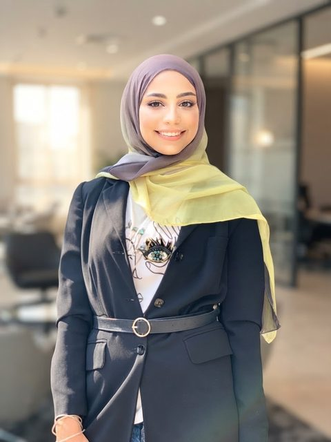

التغذية وعلم الحميات
استشارات وباقات وبرامج — في بيروت أو أونلاين.
الخدمات والأسعار
بيروت · حضورياً وأونلاين
أخصائية تغذية جاءت إلى التغذية من الرياضة، وإلى الصحة العامة من الرغبة في أن يصل أثرها إلى أبعد من غرفة واحدة.
عشر سنوات على المضمار. ترخيص مهني، وماجستير، وثماني سنوات من العمل الميداني. وشهر في شنغهاي لدراسة الطب الصيني التقليدي، بدافع الفضول.
وكل ذلك يصبّ في اتجاه واحد: مساعدة النساء على الشعور بقوة وصحة أكبر، وبالراحة في أجسادهن.
يُركض سباق الـ400 متر على أربع مراحل من مئة متر. واتّضح أن المسيرة المهنية كذلك — كل مئة متر أضافت ما لم تستطعه التي قبلها.
0–100م · 2014
800 متر، ثم 1500 متر، ثم 400 متر حواجز — والمركز الثاني على مستوى لبنان.
100–200م · 2016–17
التغذية وعلم الحميات في الجامعة اللبنانية الأميركية، وترخيص مهني عام 2017.
200–300م · 2018–23
ماجستير من الجامعة الأميركية في بيروت، ثم اليونيسف وبرنامج الأغذية العالمي ووزارة الصحة العامة.
300–400م · 2024 ←
التغذية الرياضية، وشنغهاي — وتأسيس SheOnTheRun وDietOnTheRun.
الصفحات التالية متوفّرة حالياً بالإنجليزية.
استشارات وباقات وبرامج — في بيروت أو أونلاين.
الخدمات والأسعارالأنظمة الصحية، والأبحاث، والبيانات، والرصد والتقييم، والبرامج الإنسانية.
اكتشف المزيدمجتمع للجري والعافية للنساء فقط في بيروت.
انضمّي إليناملابس النادي وأدوات العافية — الدفع عند الاستلام في كل لبنان.
زيارة المتجرمكالمة تعارف مجانية — 15 دقيقة
محادثة قصيرة عن أهدافك وما تبحث عنه، وسأساعدك على اختيار نقطة البداية المناسبة. الاستشارات متوفّرة بالعربية والإنجليزية.